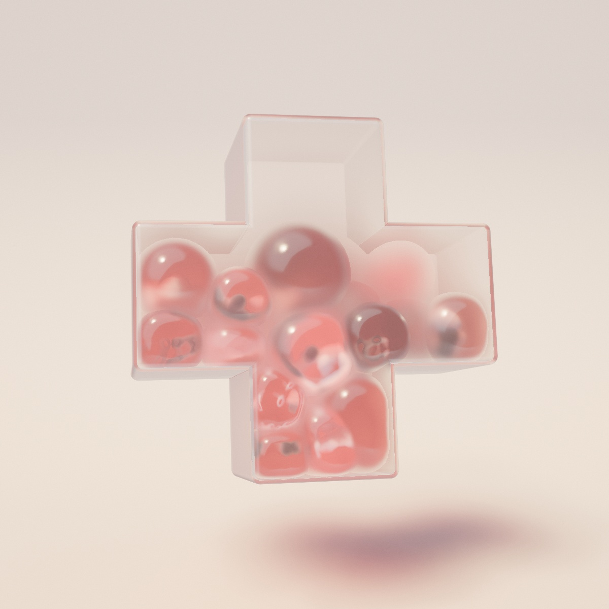

How Membrane squeezes
Soft jelly bodies packed into a thin glass shell. Turn the shell and they tumble, slide and squeeze against each other and the walls. Here is how a body keeps its volume but not its shape, how the walls drag it along as they turn, and how jelly is drawn without ever being drawn.

Jelly in a glass box
The references were product shots of cast resin: a frosted block on a pale floor with a deep coloured shape inside, sharp where it meets the surface and dissolving into a soft glow further in. Day 9's prompt was Membrane, so the shape inside went soft: a dozen jelly bodies, each with a skin, packed into a hollow shell that you can pick up and turn.
Turn it and the bodies tumble and slide, flatten against the walls and bulge into the gaps between each other, and settle again under their own weight. Beads, dice, rings or a single dark core float inside each body and push its skin around from within. The shell is a rounded cube, slab, tower, sphere, capsule, torus, T, L, cross or peanut; the bodies are balls, cushions, pills and five-lobed gumdrops.
Two halves make it work: a soft-body solver that runs in a worker, and a renderer that lays the jelly over the frame as a volume, in the shared pipeline's composite hook rather than as its meshes, then sphere-traces the glass from the same distance field the physics collides with.
A skin of particles, held round by pressure
Each body is a shell of particles: the vertices of a subdivided icosahedron, scaled so it holds the volume of a unit ball, then pushed into a cushion (a superellipsoid), a pill or a gumdrop. The particles carry no orientation and no springs to a centre; four kinds of constraint hold the shell together, solved position by position (XPBD) many times a frame.
Edges keep neighbouring particles at their rest distance. Volume is the pressure: the shell's enclosed volume, summed over its triangles, is pushed back to the rest volume along its gradient, so a body squashed one way bulges another. Shape matching finds the rotation that best fits the rest shape onto the particles (the polar decomposition, by Müller's iterative method, warm-started from last substep's rotation) and pulls every particle a little toward it, which keeps a shell from tangling or turning inside out. Bending pulls each particle toward the mean of its neighbours plus its rotated rest offset from that mean, so the skin keeps its local curvature and squashes without creasing.
The figure is the same solver in two dimensions: rings of 24 particles, one heavy core in each, in a box you can turn. Drag it round.
Five bodies in a turning box
Particles shows the shell's particles, each with the radius it collides with, and the dashed skin around each core. The 2D rings use an area constraint where the day uses volume. Softness moves the same settings as in the day, together: compliances, shape stiffness, bending and gravity, with constants tuned for 2D.
λ = −C / (Σi wi |∇iC|² + α / h²) Δxi = λ wi ∇iC
// edge: C = |xi − xj| − L volume: C = Σtriangles xa · (xb × xc) / 6 − V0
// shape matching and bending: a fixed share of the way to their goal, converted per substep
ksubstep = 1 − (1 − k)1 / substeps
Kept a skin's thickness from the surface
The beads, dice, rings and cores are particles too, heavier than the shell's (a core weighs eight, a bead two), and the physics treats each one as a ball. They collide with each other and with their own body's shell particles, but at a larger distance than they touch: their radius, plus the particle's, plus a skin thickness (a fraction of the body's radius). A floater pressing outward moves the shell before it reaches it, so it bulges the jelly from inside and never pokes through.
That alone can be beaten by a hard knock, so there is a backstop: each substep, a floater is pulled back inside the body's rest shape, placed by the same best-fit rotation as shape matching and shrunk by the skin. The floaters also shrink to fit the room inside the skin: loosely packed, together filling no more than about a third of it, none wider than most of it. Their meshes, drawn by the pipeline with matte materials, fit inside each ball.
A field that turns, with friction
The shell is a signed distance field: up to two rounded boxes (which also make the sphere and the capsule) or a torus, joined plainly or with a smooth minimum (the peanut is two balls blended into a waist). The same field is written in JavaScript for the physics and in GLSL for the glass and the floor's shadow, so what you see is exactly what the bodies touch.
The volume turns about its centre. Every particle near a wall is carried into the volume's own frame, the field and its gradient are sampled there, and a particle inside the wall is pushed back out along the normal. Then friction, which is what makes turning the shell feel like turning a box of jelly rather than spinning a glass around still contents: the slide along the wall over the substep is measured against the wall's own motion, ω × r. Below a static threshold the slide is undone entirely, so a body resting on a wall goes where the wall goes; above it, only a kinetic share is. Velocity into the wall, again relative to the wall, is removed after the substep.
Most particles are nowhere near a wall. A particle that finds itself well inside remembers how far, and skips the field until it could have travelled that far, counting down by its own possible travel plus the wall's at each substep.
s = (x − xprev) − (ω × r) h, tangential part only
|s| < 0.4 · pen → undo all of it // static
otherwise → undo min(1, 0.25 · pen / |s|) of it // kinetic
Shells against shells
Bodies collide particle against particle: two shell particles of different bodies can't come closer than the sum of their radii, which are a little over half an edge, so the shells are closed to each other. Candidate pairs are gathered once a frame, not once a substep, from a spatial hash: cells as wide as the largest contact plus a margin for the frame's fastest travel, in a power-of-two table about twice the particle count (so clearing it costs as little as filling it), and each pair of neighbouring cells visited once, from the particle's own cell and the 13 cells ahead of it. The substeps then only resolve that list.
One step behind, and a watchdog
The solver runs in a Web Worker. Each frame the page sends the time that has passed, the spin, the panel's physics settings, each body's scale, and any bodies added or removed; the worker steps and sends back the particles and every body's centre and rotation, with the buffers transferred rather than copied. The page draws the last state it received, one step behind. Frames that arrive while the worker is still busy add their time to the next step. Recordings, whose virtual clock a worker can't follow frame by frame, step the same solver on the main thread instead.
The page only rebuilds the skins when a new state arrives. Each shell is pushed out by its particle radius along its normals, then smoothed by one level of Loop subdivision, applied as a fixed stencil worked out once per shell (every new vertex is a fixed weighted sum of old ones), so a 162-particle shell becomes a 642-vertex skin with a few multiply-adds per vertex.
A soft solver can get restless: a hard flick or a tight squeeze can set a body thrashing or crush it out of shape. The worker reports the fastest particle (relative to the spinning walls) and the most deformed body. When either passes its limit, the page firms everything up for a moment: softness drops to a fifth and damping rises. It eases in over a few frames, holds for half a second after things calm down, and eases back to the panel's softness over about a second. Bodies swelling in move fast on purpose, so only their shape is watched then. The figure above runs the same watchdog; Softness at 1 and a fast drag can trip it.
Drawing jelly without drawing it
The bodies are never drawn as surfaces by the pipeline. The pipeline renders the floor and the floaters, and hands its lit image and depth to the day's own passes (its composite hook), which lay the jelly over it.
Two passes draw the skins. The first keeps the nearest surface: its normal and distance from the eye. The second draws every skin again, both sides, adding into one target: a back face adds its distance from the eye and a front face subtracts it. Along any pixel's ray, each body contributes back minus front, which is the length of jelly that ray crosses, however many bodies it goes through and in whatever order they are drawn. Each body's contribution is weighted by its absorption (the log of its colour, times Colour), so the target holds the optical depth per channel, and the plain thickness in alpha. Distances are clipped at the depth of whatever is opaque, so a floater cuts the ray short, and taken from a reference distance so half floats keep them precise.
Aim the ray through the bodies below. Front faces are marked −, back faces +; fragments behind the floater are clipped to its depth.
One ray, the additive pass
Each pixel of the row is the backdrop, or the floater, times e−τ, where τ is the sum the additive pass holds. The day adds scattering (Milk) on top, in the jelly's own colour.
A full-screen pass then shades the jelly. What's behind is the pipeline's image, shifted by the surface's slope for refraction (a little more in red and less in blue at high Refraction), scaled by a smoothed thickness, because the raw one drops at every floater's outline and would draw lines there. It is blurred by how much jelly it crosses, then absorbed: e−τ. Milk scatters light out of the ray and back in, in the colour recovered from the jelly's own absorption per unit length: the studio's ambient light from all round, the key light scattered forward, and a glow of the backdrop carried through. A dielectric specular sits on top, from the nearest surface's normal.
Sharp against the wall, a glow further in
The frosted look is a blur that depends on distance: a body pressed against the wall reads sharp, one further in is a soft glow. Every pixel needs its own blur radius, so the blur is read from a Gaussian pyramid: the image halved again and again, each level made from the one above with a 13-tap filter, so level i is blurred by about 2i pixels. A pixel takes the two levels around log2 of its radius and mixes them.
The levels are packed into one atlas texture. One texture and no branching per level keeps the shaders small for the Direct3D compiler behind ANGLE. Coarse levels are magnified a lot, so they are read with a cubic B-spline built from four bilinear taps, which stays smooth where bilinear would show blocks. Four images get a pyramid each: the pipeline's frame, the jelly's optical depth, the finished jelly, and the light map for the shadow.
A row through frosted glass
The radius is Frost times the distance from the inside of the wall to the jelly, in pixels at that distance. The reference is an exact Gaussian per pixel, which would cost a loop of taps that grows with the radius; the pyramid costs two bicubic reads, so at most eight bilinear taps, at any radius.
Thin glass, traced from the field
The shell is not a mesh. A full-screen pass sphere-traces its distance field per pixel, starting from a bounding sphere; where a ray just misses, how close it came antialiases the silhouette. The step count is a uniform, so ANGLE's Direct3D backend keeps the loop a loop instead of unrolling it.
The walls are thin slabs, and that choice is what keeps the image clean. A ray through a slab with parallel faces comes out parallel to how it went in, shifted by a fraction of the wall's thickness. So each wall only tints and reflects (Fresnel at both of its faces, and no total internal reflection, since the inner face reflects as much as the outer one at the same angle), and the eye ray crosses the inside straight, in register with the jelly image, which is in screen space. A thick refracting block would bend every ray away from the jelly image, and leave marks along the inner outline.
Where a ray grazes the wall and comes out again without reaching the inside, it is the rim: a long path through glass, bent like a lens, tinted and darkened. Move the pointer over the figure to aim.
A ray through the wall
Through the face of a wall the exact ray and the straight one barely part. Toward the silhouette the wall curves under the ray and the exact ray turns more and more. Where the straight ray would cross only glass, the shader stops treating it as straight and shades the rim as bent, tinted glass.
Inside, the ray crosses straight to the jelly: its distance comes from the jelly pass, and the jelly is read from its pyramid at a blur of Frost times the distance from the inner wall, which is the satin finish. Haze is scattering in the walls' material: Beer–Lambert over each stretch of glass, dimming what's behind and adding the studio and the key light scattered in. Where the ray misses the jelly it reaches the far wall, which reflects a little of the inside back and passes the rest through to the backdrop.
A coloured shadow, and a shutter
The shadow on the sweep is the key light coloured by the jelly it crossed. The skins are drawn once more from the light, orthographically, with the same signed trick: front faces subtract their distance along the light and back faces add it, weighted by absorption, so each texel of a 512 × 512 map (256 on phones) holds the jelly's optical depth toward the light. It is turned into transmittance, with milk scattering part of the light out, and given its own pyramid. The floor reads it at a blur of the light's angular size times the gap to the bodies, so the shadow softens with distance the way a penumbra does.
The shell's share is marched through the same field from each floor point toward the light, as a soft shadow: a thin shell loses a little light at its surfaces. The bodies, as spheres, also darken the floor near them by how opaque they are and bounce their colour onto it, and the field gives the floor a soft contact shadow under the shell.
The image is then streaked by the spin, as a camera shutter would. Everything that moves turns with the volume, so one angular velocity describes all the motion: each pixel's velocity is ω × (P − c) at the depth of what it shows, the shell's surface or the jelly, and the image is gathered along it with nine taps over the shutter. Pixels off the volume assume the near half of it, so a silhouette smears outward over the backdrop.
v = ω × (P − c) · shutter // projected from P − v/2 to P + v/2, nine taps
Shrink, morph, swell
A change never cuts. The old bodies shrink away over half a second, their particles following the shrinking rest shape, and are removed. Meanwhile the volume morphs into its next shape over 1.4 seconds: the physics and the glass both mix the two fields with a smoothstep, so the walls push the contents along as they move. After 0.45 seconds the new set appears at 30% of its size, each body with a small random delay, and swells to full size over about a second, pushing the others aside as it grows.
The new set is sized to fill the target shape: the shape's volume and the largest ball that fits in it are estimated on a 28³ grid, and the bodies' sizes, drawn with some variety, are scaled until together they take up Fill of that volume. In a narrow shape the biggest is capped by the shape's width, so more bodies are added to make up the fill. Each is placed where it fits at its starting size, inside both the morphing shape and the target, away from the others.
A slice through the change
The day's own shapes, sliced at the middle (a torus slices into two circles). Here the bodies are placed at full size and simply scaled; in the day they start small and the physics makes room as they swell.
Heard through jelly and glass
Every sound is a one-shot cut from CC0 recordings on freesound.org, played with a random variant, pitch and pan. The page watches each body's centre between physics states: a sudden change of velocity is a knock, played as a rubber marble, with a deep voop under a firmer one and a low wobbling jelly bounce under the hardest. Beads knocking about inside their body play the marble too. While everything rests, a body now and then squishes softly, panned to where it sits. A change of shape plays a suction pop as the old set leaves and squelches played backwards as the new one swells in, and swinging the volume round fast, or onto a new axis, gives a swoosh.
Everything goes through a soft low-pass and a short, dark echo, convolved with a room impulse the page generates itself (a few early reflections, then a noise tail that darkens as it decays), as if heard from inside. Sixteen voices at most; the shape change's sounds always get one.
Where the time goes
Measured at 1080p on a desktop GPU, one run at a time, with the volume turning. The GPU spends about 3 ms a frame. The physics runs in parallel in its worker, so it costs the frame nothing as long as it keeps up.
| Work | Time |
|---|---|
| GPU, whole frame, 1080p | ~3 ms |
| Main scene pass (floor, floaters), 4× MSAA | 1.1 ms |
| Glass shell (volume pass) | 0.3 ms |
| Jelly composite | 0.1 ms |
| Each Gaussian pyramid (four a frame) | 0.08 ms |
| Physics worker, one step, 16 bodies, 1820 particles | 1.8 ms |
| Collision pair search, of that | 0.6 ms |
The rest of the frame is spread across the smaller passes: the shadow map, the prepass, the skins' front and thickness passes, the light map, bloom and the final pass.
Controls
- Drag to turn the volume (it keeps spinning a little when let go, and tumbles slowly by itself when left alone). Scroll or pinch to zoom.
- Space pauses; while paused, dragging orbits the camera instead.
- Look: the palette, which also sets the frost, haze and jelly sliders to suit it.
- Container: Shape (morphs), Visible, Walls, Frost, Haze, Tumble, Motion blur.
- Bodies: Count, Variety, Fill, Softness, the mix of Spheres, Cushions, Pills and Gumdrops, Floaters, Skin thickness.
- Jelly: Colour, Milk, Scatter, Refraction. Light: Colour, Brightness, Key light.
- R makes a new one, M or the speaker button toggles sound, F goes fullscreen, Tab hides the panel, P saves a screenshot.
- Auto change brings a new one every 12 seconds; randomizing, pausing or any interaction starts the count over.